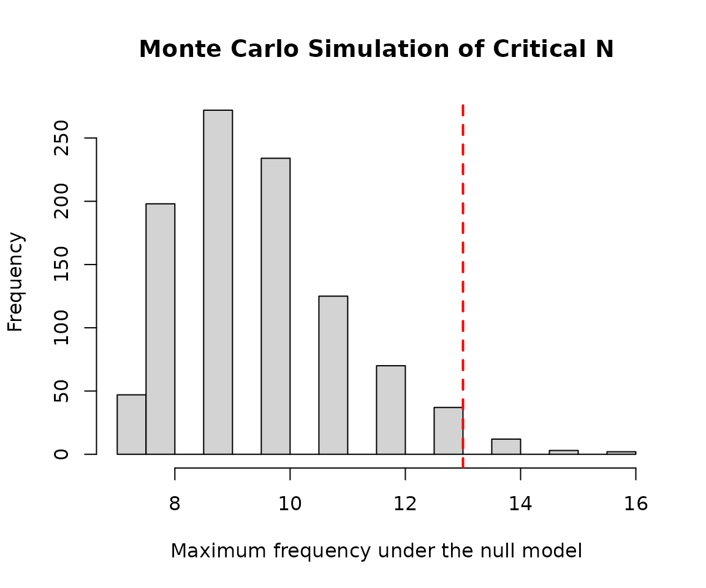
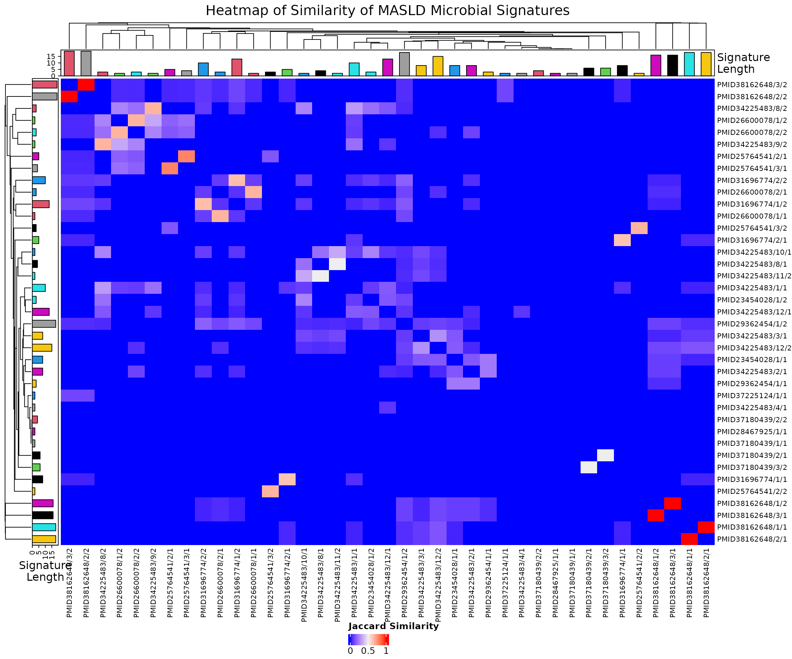

Exploratory Analysis of MASLD Microbial Signatures
Peace Daniel
09 November, 2026
Source:vignettes/goldstandard_vignette_peace.Rmd
goldstandard_vignette_peace.RmdIntroduction
This vignette demonstrates an exploratory analysis of microbial signatures associated with metabolic dysfunction-associated steatotic liver disease (MASLD) using data obtained from BugSigDB and functions provided by the bugSigSimple package.
Analysis objectives
- Downloading the data from BugSigDB
- Filtering of the data to select relevant signatures and remove similar/duplicate signatures
- Description of the studies
- Description of the taxa
- Basic statistical tests
- Monte Carlo simulation to calculate critical N
- Heatmaps and dendrograms
Making sure packages are installed
if (!require("BiocManager", quietly = TRUE))
install.packages("BiocManager")
BiocManager::install(c("devtools", "tidyverse", "kableExtra"))
BiocManager::install(c("waldronlab/bugSigSimple", "waldronlab/BugSigDBStats", "waldronlab/bugsigdbr"))Download BugSigDB data
full.dat <- bugsigdbr::importBugSigDB(cache = FALSE)
dim(full.dat)## [1] 7425 51The BugSigDB database was downloaded using the
importBugSigDB() function from the
bugsigdbr package. The result contains all curated
microbial signatures together with study metadata such as disease, body
site, sequencing platform, and abundance direction.
Remove empty signatures
ind1 <- lengths(full.dat[["MetaPhlAn taxon names"]]) > 0
ind2 <- lengths(full.dat[["NCBI Taxonomy IDs"]]) > 0
dat <- full.dat[ind1 & ind2, ]
dim(dat)## [1] 7425 51Signatures without annotated taxa were removed to ensure that only complete microbial signatures were included in downstream analyses.
Select MASLD-related signatures
pattern <- paste(
"Metabolic dysfunction-associated steatotic liver disease",
"Metabolic dysfunction-associated liver disease",
"Metabolic dysfunction-associated steatohepatitis",
"Non-alcoholic steatohepatitis",
"Nonalcoholic steatohepatitis",
"Non alcoholic steatohepatitis",
"Non-alcoholic fatty liver disease",
"Nonalcoholic fatty liver disease",
"Non alcoholic fatty liver disease",
"MASLD",
"MAFLD",
"MASH",
"NASH",
"NAFLD",
sep = "|"
)
masld.dat <- dat %>%
filter(
grepl(pattern, Condition, ignore.case = TRUE) |
grepl(pattern, `Group 0 name`, ignore.case = TRUE) |
grepl(pattern, `Group 1 name`, ignore.case = TRUE)
) %>%
filter(
grepl(pattern, Condition, ignore.case = TRUE)
)
nrow(masld.dat)## [1] 43## Condition n
## 1 Non-alcoholic fatty liver disease 37
## 2 Non-alcoholic steatohepatitis 6To capture the complete body of evidence related to metabolic dysfunction-associated steatotic liver disease (MASLD), signatures were identified using both the current disease terminology (MASLD) and historical terms (MAFLD, NAFLD, and NASH). Disease-related terms were searched across the Condition, Group 0 name, and Group 1 name fields to recover studies curated under different naming conventions. Finally, only records whose primary condition corresponded to a MASLD-related disease were retained, excluding studies focused primarily on clinical biomarkers or laboratory measurements.
Remove similar signatures
## [1] 43Exact duplicate records were removed using distinct() to reduce redundancy before downstream analyses. This step retains unique MASLD-associated microbial signatures while preserving the overall study representation.
Study characteristics
study.summary <-
masld.filtered %>%
count(`Body site`, `Sequencing type`)
knitr::kable(study.summary)| Body site | Sequencing type | n |
|---|---|---|
| Feces | 16S | 35 |
| Feces | PCR | 2 |
| Feces | WMS | 3 |
| Saliva | WMS | 1 |
| Supragingival dental plaque | WMS | 2 |
The selected MASLD signatures span multiple studies and sequencing approaches. Summarizing study characteristics provides context for interpreting downstream analyses and highlights the diversity of experimental designs represented in BugSigDB.
Taxonomic summary
taxa.table <- createTaxonTable(masld.filtered)
head(taxa.table)## # A tibble: 6 × 6
## `Taxon Name` `Taxonomic Level` total_signatures increased_signatures
## <chr> <chr> <int> <int>
## 1 Porphyromonadaceae family 9 3
## 2 Bacteroides genus 7 2
## 3 Dorea genus 6 4
## 4 Roseburia genus 6 3
## 5 Prevotella genus 6 2
## 6 Alistipes genus 6 2
## # ℹ 2 more variables: decreased_signatures <int>, `Binomial Test pval` <dbl>| Taxon Name | Taxonomic Level | total_signatures | increased_signatures | decreased_signatures | Binomial Test pval |
|---|---|---|---|---|---|
| Porphyromonadaceae | family | 9 | 3 | 6 | 0.510 |
| Bacteroides | genus | 7 | 2 | 5 | 0.450 |
| Dorea | genus | 6 | 4 | 2 | 0.690 |
| Roseburia | genus | 6 | 3 | 3 | 1.000 |
| Prevotella | genus | 6 | 2 | 4 | 0.690 |
| Alistipes | genus | 6 | 2 | 4 | 0.690 |
| Lactobacillus | genus | 5 | 4 | 1 | 0.370 |
| Streptococcaceae | family | 5 | 2 | 3 | 1.000 |
| Lachnoclostridium | genus | 5 | 5 | 0 | 0.062 |
| Prevotellaceae | family | 5 | 1 | 4 | 0.370 |
The taxonomic summary identifies microorganisms that recur across MASLD-associated signatures. Frequently reported taxa may represent microbial features that are consistently observed across independent MASLD studies.
Monte Carlo critical N
siglengths <- lengths(masld.filtered$`MetaPhlAn taxon names`)
criticalN <- getCriticalN(
relevant.sigs = masld.filtered$`MetaPhlAn taxon names`,
siglengths = siglengths
)
criticalN## $critical_n
## 95%
## 13
##
## $ci_lower
## 2.5%
## 12
##
## $ci_upper
## 97.5%
## 13
##
## $simulated_values
## [1] 9 13 9 12 10 11 10 12 11 8 8 8 8 7 11 8 8 10 7 8 9 9 8 12
## [25] 9 7 10 10 10 9 9 11 9 9 11 11 11 8 7 9 11 8 10 8 8 8 13 10
## [49] 9 11 9 9 10 10 14 10 11 9 7 10 10 13 10 10 8 9 12 8 12 7 14 11
## [73] 10 11 11 9 8 12 10 9 9 9 12 10 9 10 9 8 10 10 11 9 7 9 14 12
## [97] 10 12 11 10 11 13 9 10 10 10 8 8 8 10 11 12 10 8 13 10 11 9 10 8
## [121] 9 12 9 8 10 9 12 10 9 11 8 11 11 11 10 8 10 10 8 8 11 9 11 11
## [145] 8 9 12 7 9 10 8 10 9 13 10 10 8 7 9 10 8 10 11 8 9 9 7 8
## [169] 10 12 8 10 10 9 10 12 8 8 11 12 8 9 8 8 9 9 9 10 11 9 8 12
## [193] 11 9 9 11 8 7 8 9 9 10 10 12 12 8 9 10 10 9 8 12 10 10 8 9
## [217] 10 10 10 10 11 8 11 9 10 9 8 13 9 11 14 10 10 11 9 9 10 10 9 10
## [241] 9 10 12 9 9 9 11 7 12 10 13 9 10 9 9 10 10 9 8 7 8 7 10 11
## [265] 9 10 10 13 8 8 12 10 8 10 9 11 12 10 11 10 8 7 9 12 7 10 12 10
## [289] 9 12 9 10 8 8 8 9 9 9 10 9 9 8 10 10 10 8 11 9 10 9 10 8
## [313] 13 10 10 8 8 10 10 13 9 12 9 9 8 13 9 11 9 7 8 11 7 9 10 11
## [337] 8 10 10 8 8 9 11 9 9 8 12 12 9 9 9 10 8 11 13 8 9 9 8 11
## [361] 11 8 10 13 11 9 11 11 9 8 9 9 10 9 13 10 9 9 13 9 9 9 11 8
## [385] 11 10 8 9 9 9 9 12 7 9 8 13 8 10 10 9 10 8 10 10 7 9 11 8
## [409] 9 12 10 8 10 10 8 9 9 12 9 9 8 9 9 9 9 14 10 10 13 8 12 9
## [433] 10 9 7 9 11 8 11 9 10 11 12 11 8 7 9 8 9 8 9 9 8 10 8 13
## [457] 12 11 14 14 10 8 8 11 8 12 11 9 7 9 9 7 9 8 7 11 10 10 11 8
## [481] 10 12 9 9 10 8 8 9 10 9 11 14 9 9 10 10 12 10 10 10 10 8 9 11
## [505] 8 10 9 10 9 9 10 10 9 8 10 8 11 11 13 10 10 7 9 8 10 8 11 10
## [529] 10 9 12 9 9 9 9 11 12 10 10 10 12 9 11 7 8 9 8 10 9 8 12 12
## [553] 13 8 8 12 9 10 9 8 10 9 11 11 8 8 9 9 9 8 8 9 11 8 10 9
## [577] 9 8 13 10 8 10 10 10 11 10 10 16 8 10 9 10 13 9 8 12 8 9 11 10
## [601] 13 10 11 9 11 8 8 9 11 11 10 12 11 8 8 10 8 7 10 11 10 10 8 8
## [625] 10 9 12 7 7 10 10 10 10 10 11 9 9 9 8 12 10 9 13 9 11 9 9 9
## [649] 8 12 8 10 14 11 10 8 9 11 9 12 9 9 9 10 8 8 9 10 8 10 12 9
## [673] 9 10 9 11 8 9 10 9 10 11 8 9 10 10 7 10 8 8 11 8 11 9 8 9
## [697] 9 11 7 11 10 15 10 10 8 12 11 11 8 10 9 9 11 8 9 10 7 9 8 8
## [721] 7 8 7 11 9 8 7 7 10 13 9 9 13 8 8 8 10 10 8 7 9 9 12 14
## [745] 8 9 7 8 8 11 11 7 8 9 13 10 11 10 11 9 10 12 10 8 10 8 12 10
## [769] 8 15 10 10 8 9 11 8 9 9 9 10 10 7 10 10 11 12 8 8 9 12 8 11
## [793] 10 10 10 9 14 8 10 11 9 10 13 8 8 8 9 9 9 9 13 10 13 11 13 9
## [817] 8 9 11 10 9 9 10 10 8 9 9 9 10 10 10 12 8 10 9 12 9 15 9 9
## [841] 13 8 10 8 10 9 9 10 12 9 9 7 11 11 9 10 11 11 8 9 9 8 8 10
## [865] 9 9 8 8 8 10 9 9 10 9 10 9 7 9 9 10 8 9 8 9 9 8 16 10
## [889] 11 9 9 9 8 9 10 9 9 8 11 14 8 8 11 8 7 11 12 10 12 8 11 8
## [913] 11 8 9 11 9 10 8 9 8 12 8 10 9 10 10 11 8 9 13 9 9 9 12 7
## [937] 11 9 11 8 7 9 9 10 9 7 9 13 9 9 11 9 13 9 10 12 11 10 12 10
## [961] 9 9 11 9 9 10 11 9 10 10 8 8 11 10 10 11 12 9 9 8 8 8 8 12
## [985] 8 11 9 12 9 13 9 9 10 9 10 10 10 10 11 10
##
## $alpha
## [1] 0.05
##
## $quantile_label
## [1] "95th percentile"The Monte Carlo simulation estimates the critical number of independent studies required before repeated observation of a taxon is unlikely to occur by chance.
Plot critical N
hist(
criticalN$simulated_values,
breaks = 30,
main = "Monte Carlo Simulation of Critical N",
xlab = "Maximum frequency under the null model"
)
abline(
v = criticalN$critical_n,
col = "red",
lwd = 2,
lty = 2
)
The simulated distribution illustrates the study count threshold required for statistical significance under random sampling.
Signature similarity
allsigs <- bugsigdbr::getSignatures(
masld.filtered,
tax.id.type = "taxname"
)
# Keep signatures containing at least two taxa
allsigs <- allsigs[sapply(allsigs, length) > 1]
length(allsigs)## [1] 39
# Pairwise overlaps
mydists <- BugSigDBStats::calcPairwiseOverlaps(allsigs)
dim(mydists)## [1] 144 8
# Jaccard similarity matrix
jmat <- BugSigDBStats::calcJaccardSimilarity(allsigs)
# Keep BugSigDB study/experiment identifiers
row_labels <- sub("^bsdb:", "PMID", sub("_.*$", "", rownames(jmat)))
col_labels <- sub("^bsdb:", "PMID", sub("_.*$", "", colnames(jmat)))Microbial signatures were converted into a pairwise Jaccard similarity matrix using functions provided by BugSigDBStats. This matrix was subsequently used for both the heatmap and hierarchical clustering analyses.
Heatmap
library(grid)
library(ComplexHeatmap)
# Calculate signature lengths
siglengths <- sapply(allsigs, length)
# Short labels for display
short.labels <- paste0("S", seq_len(nrow(jmat)))
# Top annotation
ha <- HeatmapAnnotation(
`Signature\nLength` = anno_barplot(
siglengths,
gp = gpar(fill = 4:(length(siglengths) + 3)),
annotation_name_gp = gpar(
fontsize = 10,
lineheight = 0.8
)
)
)
# Left annotation
hr <- rowAnnotation(
`Signature\nLength` = anno_barplot(
siglengths,
gp = gpar(fill = 4:(length(siglengths) + 3)),
annotation_name_gp = gpar(
fontsize = 10,
lineheight = 0.8
)
)
)
# Create heatmap
hm <- Heatmap(
jmat,
top_annotation = ha,
left_annotation = hr,
row_names_max_width = unit(10, "cm"),
column_names_max_height = unit(3, "cm"),
row_labels = row_labels,
column_labels = col_labels,
row_names_gp = gpar(fontsize = 8),
column_names_gp = gpar(fontsize = 8),
column_title = "Heatmap of Similarity of MASLD Microbial Signatures",
column_title_gp = gpar(fontsize = 15),
heatmap_legend_param = list(
title = "Jaccard Similarity",
direction = "horizontal"
)
)
# Draw heatmap
draw(
hm,
heatmap_legend_side = "bottom",
annotation_legend_side = "right"
)
# Save the heatmap as a high-resolution PNG
png(
filename = file.path(tempdir(), "MASLD_heatmap.png"),
width = 14,
height = 10,
units = "in",
res = 300
)
draw(
hm,
heatmap_legend_side = "bottom",
annotation_legend_side = "right"
)
dev.off()## agg_png
## 2The heatmap visualizes pairwise Jaccard similarities among MASLD-associated microbial signatures, highlighting groups of studies with similar taxonomic compositions.
Dendrogram
# Convert similarity to distance
hc <- hclust(as.dist(1 - jmat))
plot(
hc,
labels = row_labels,
main = "Hierarchical Cluster Map of MASLD Microbial Signatures",
xlab = "",
sub = "",
cex = 0.6
)Hierarchical clustering groups microbial signatures according to taxonomic similarity, revealing patterns of shared microbial composition across MASLD studies.
Discussion
This vignette demonstrates a complete exploratory analysis of MASLD-associated microbial signatures curated in BugSigDB using the existing functionality provided by bugSigSimple. After selecting disease-relevant signatures and reducing redundancy, study characteristics and taxonomic patterns were summarized, Monte Carlo simulation estimated the critical number of supporting studies, and clustering methods visualized relationships among microbial signatures. Together, these analyses illustrate a reproducible workflow for exploring disease-associated microbial signatures while reusing established package functions rather than implementing new analytical methods.